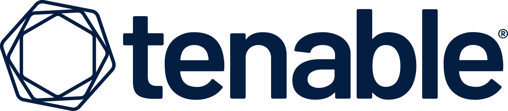
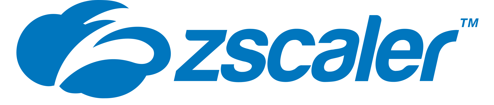
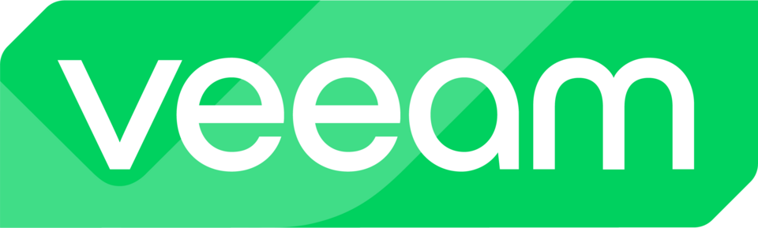
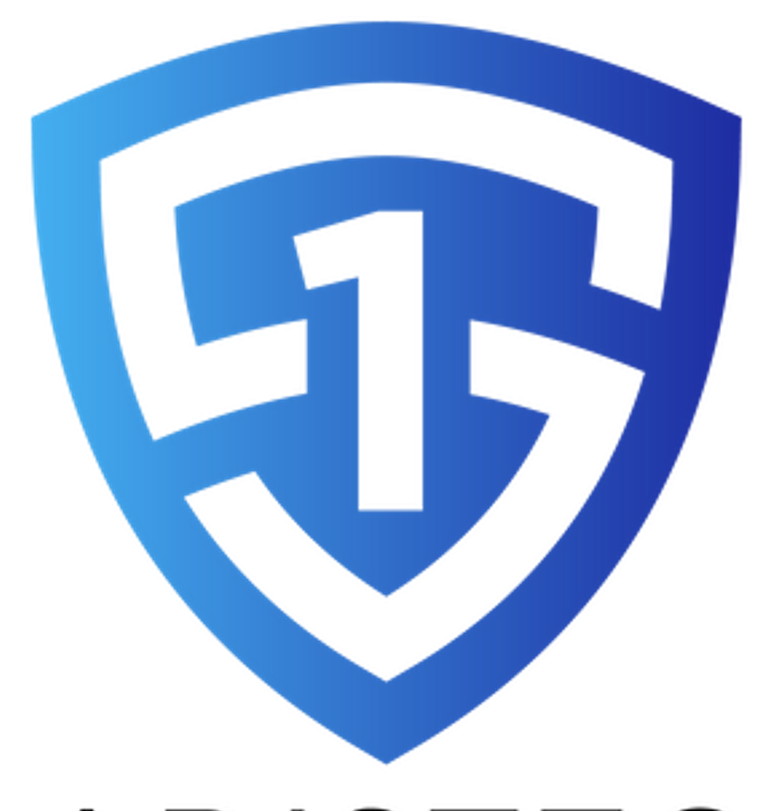
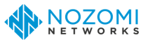
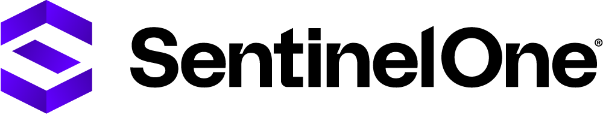
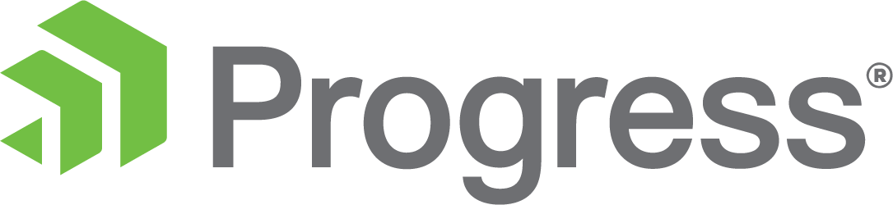
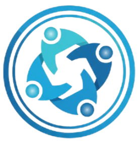
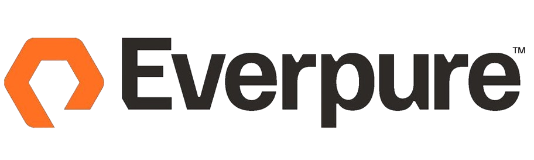
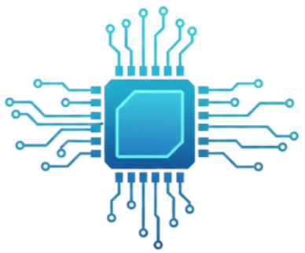

Conheça o portfólio de fabricantes globais representados pela Adistec Brasil, organizados por áreas de atuação em segurança da informação, Data Center e Alianças estratégicas.

Identifica, avalia e prioriza vulnerabilidades, falhas de configuração e riscos de exposição em ambientes on-premises, cloud, OT e aplicações, apoiando decisões de redução de risco baseada em contexto.

Líder em segurança cloud-native, pioneiro no modelo Secure Access Service Edge (SASE) e Zero Trust.

Garante disponibilidade, integridade, recuperação e orquestração de dados e workloads, protegendo contra falhas, erros humanos, ataques de ransomware e desastres, com SLAs claros de RPO/RTO.

Clique para saber mais sobre nossa Unidade de Negócio de Segurança
→
Protege redes OT, ICS e IoT contra ameaças cibernéticas, oferecendo visibilidade, detecção de ameaças e monitoramento contínuo sem impacto operacional.

Previne, detecta e responde a ataques avançados em endpoints.

Fornece plataformas para desenvolvimento, execução, integração e proteção de aplicações e dados, ajudando organizações a manter ambientes críticos estáveis, seguros e altamente disponíveis.

Clique para saber mais sobre nossa Unidade de Negócio de Alianças.
→
Nuvem privada padronizada: operação simples, segura e automatizada.

Gerencie Dados, não Storage.
NetApp é uma empresa global especializada em armazenamento de dados, gestão de dados e infraestrutura inteligente, com forte atuação em ambientes híbridos e multi-cloud.

Clique para saber mais sobre nossa Unidade de Negócio de Data Center.
→